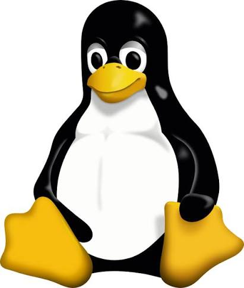
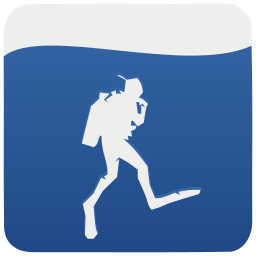

Основные достижения и изобретения
Главные проекты
-
Ядро Linux (1991) - база для серверов, суперкомпьютеров и Android.

-
Система Git (2005) - стандарт распределённого контроля версий.
-
Subsurface - программа для планирования погружений дайверов.

| Год | Проект | Что это | Язык |
|---|---|---|---|
| 1991 | Linux 0.01 | Первая версия ядра | C |
| 1994 | Linux 1.0 | Первая стабильная версия ядра | C |
| 2005 | Git | Система контроля версий | C |
| 2011 | Linux 3.0 | Ядро к 20-летию Linux | C |
| 2011 | Subsurface | Программа для дайверов | C, C++ |